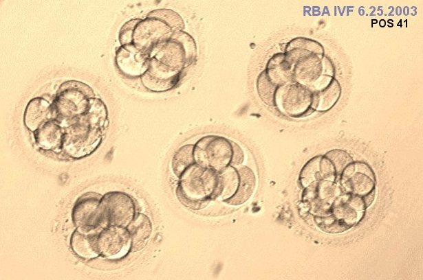

In this post I will briefly introduce the clinical need (and the motivation behind this project). Then I will go into more detail about the approach I used to tackle the problem of predicting embryo viability and show some results. The material on this page is drawn from my recently published paper and also from my class project for CS 229 at Stanford (Machine Learning).
The focus of my research was to improve outcomes of in vitro fertilization (IVF), with the end goal of improving pregnancy rates and reducing the incidence of negative outcomes such as miscarriage, pregnancy complications and preterm birth. These negative outcomes often happen for one of two reasons:
To avoid these poor outcomes, physicians would ideally want to transfer exactly one viable embryo to their patient so that they have a singleton pregnancy. Unfortunately it is currently very difficult to figure out which embryos are viable and which are not. Typically the embryos which look “good” are presumed to be viable, but this approach has very poor positive predictive value (that is, even among embryos which look “good” only about 50-60% are actually viable). A real clinical example is shown below: all of the embryos shown appear to have good morphology, but only one actually resulted in a pregnancy upon transfer.

So it seems that we need a more accurate predictor of viability to help physicians make better decisions about which embryos to transfer.
In my quest to find a better predictor viability, I settled on two types of parameters to measure. I chose these because they can be measured noninvasively with minimal disturbance to the embryo.
The imaging parameters can be measured by
Include schematic of prediction based on multiple types of parameters ** Include some equations with MathJax **